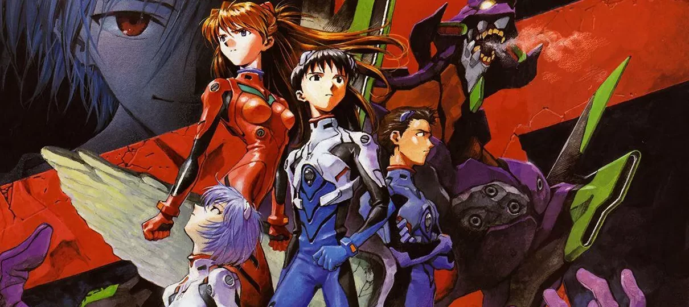
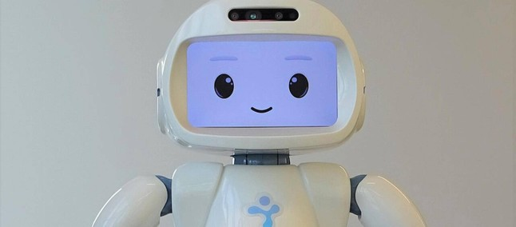

Neon Genesis Evangelion | Criador dá relato sobre saúde mental

Neon Genesis Evangelion começou a ser exibido na televisão japonesa em 1995, e desde então conquistou
fama mundial com suas batalhas intensas de “robôs gigantes” contra Anjos do mal, questionamentos
sobre a humanidade e uma trama que mostra o processo de amadurecimento de um adolescente.
Seu nome em japonês é Shinseiki Evangelion, algo como O Evangelho do Novo Século, em tradução livre
para português. O anime foi dirigido por Hideaki Anno, que trabalhou com o lendário Hayao Miyazaki
antes de fundar seu próprio estúdio, chamado de Gainax.
A série animada clássica, na íntegra com seus 26 episódios, e dois filmes clássicos da franquia
chegaram à Netflix, e aqui contamos tudo o que você precisa saber antes de embarcar nessa jornada —
incluindo em qual ordem assistir.
Ver
mais
Robôs com design bonito ajudam pessoas em tratamentos de saúde mental, diz pesquisa

Pesquisadores da Universidade de Cambridge, no Reino Unido, afirmam que as sessões de bem-estar para
tratamentos de saúde mental conduzidas com robôs em um local de trabalho podem ser mais eficazes se
o design dos equipamentos for mais agradável.
Ver
mais
Apple pode transformar AirPods em 'ferramenta de saúde', diz analista
Os famosos AirPods, fones de ouvido sem fio da Apple, podem passar a servir como uma ferramenta de
saúde para os consumidores. De acordo com o analista da Bloomberg Mark Gurman, a empresa da maçã
pretende investir em novos recursos para o bem-estar em breve. Já existem, no mercado, fones que
prometem auxiliar em uma melhor qualidade do sono, como os da Philips, mas a expectativa é que novos
recursos da Apple estejam mais relacionados à própria saúde auricular. A estimativa é que as
mudanças cheguem aos consumidores dentro de um a dois anos.
Ver
mais